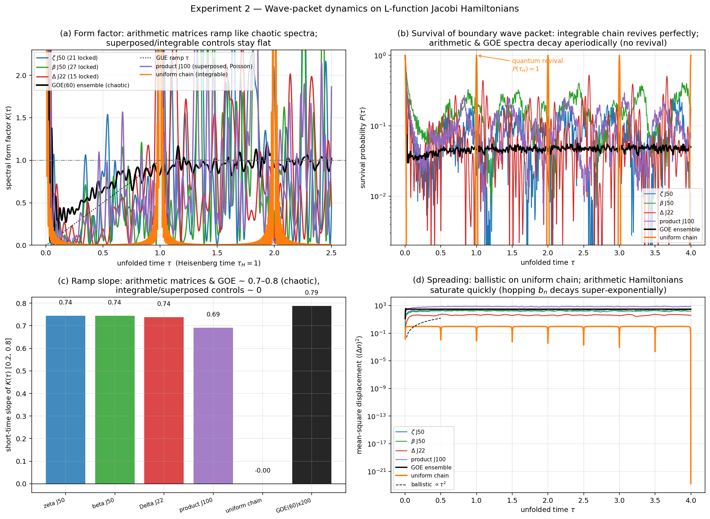
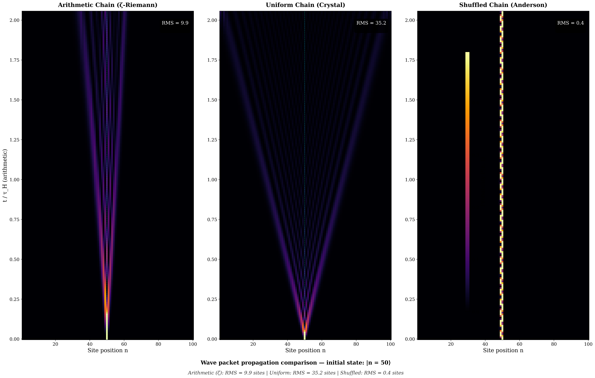
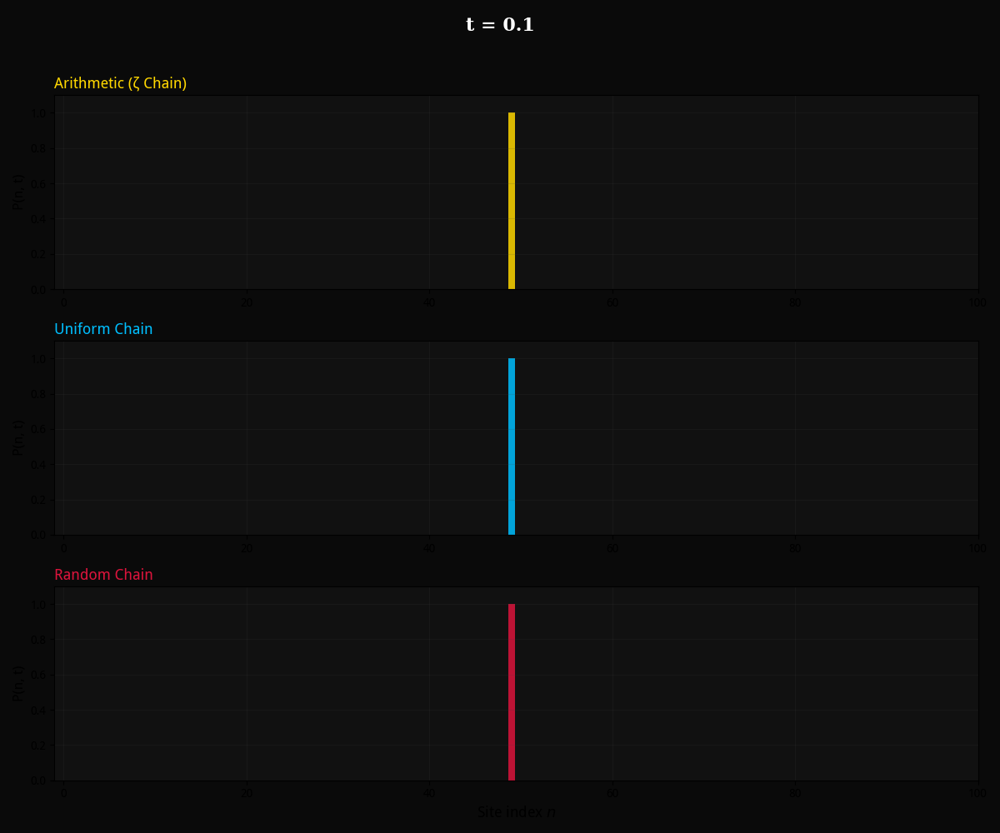

§6 Indicator 2 — Wave-Packet Scrambling
Spectral statistics tell us about the eigenvalues. But a quantum system is more than its spectrum — it is also about dynamics. How does a localized state evolve in time?
In a crystal (uniform chain), a wave packet propagates ballistically, forming a clean light cone. It eventually revives — returns to its initial state — because the spectrum is periodic.
In an Anderson insulator (random disorder), a wave packet never moves. It stays localized at its starting site forever — Anderson localization.
What does the arithmetic chain do?

Spectral Form Factor Ramp
The slope of the spectral form factor ramp characterizes level correlations:
| System | Slope | GOE ref. |
|---|---|---|
| ζ(s) | 0.744 | 0.787 |
| L(s,χ₄) | 0.744 | |
| ζ·L(s,χ₄) | 0.738 |
Ramp slopes ≈ 94–95% of GOE prediction, confirming strong spectral rigidity.
Revival vs. No Revival
Uniform chain: Perfect revival with \(P_{\text{rev}} = 0.993\)
Arithmetic Jacobi: No revival — wave packet disperses irreversibly, characteristic of quantum chaos.
Transport Behavior
Wave-packet center-of-mass shows ballistic-to-diffusive crossover in arithmetic systems, contrasting with purely ballistic transport in uniform chains.
Participation ratio grows linearly → ergodic exploration of the full Hilbert space.
Quantum Wave-Packet Spatiotemporal Evolution
Real-time evolution |ψ(t)⟩ = e−iJt|ψ(0)⟩ on three chains sharing identical coefficient distributions but different orderings: arithmetic (ζ-Jacobi), uniform crystal, and shuffled Anderson. The arithmetic chain exhibits a unique pseudo-Anderson regime — restricted spreading (RMS ≈ 10) without true localization.



